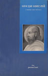
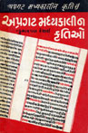
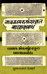
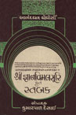

સંશોધન સાહિત્ય
જ્ઞાનવિમલસૂરિકૃત સ્તબક (૧૯૮૦) ; આનંદઘન : એક અધ્યન (૧૯૮૦) ; અપ્રગટ મધ્યકાલીન કૃતિઓ (૧૯૮૨) ; ગત સૈકાની જૈન ધર્મની પ્રવૃત્તિઓ (૧૯૮૮) ; મેરુસુંદર ઉપાધ્યાયરચિત અજિતશાંતિ સ્તવનનો બાલવબોધ (૧૯૯૦) ; અબ હમ અમર ભયે |
||
|  |
આ પુસ્તકમાં મહાયોગી આનંદઘન વિશેનો અભ્યાસ મળે છે. આનંદઘનજીનું જીવન, તે સમયની ગુજરાતની રાજકીય પરિસ્થિતિ, જૈન ધર્મ, સાહિત્ય આ બધાં વિશે વિસ્તૃત માહિતી આપી છે. આનંદઘનની કાવ્યપ્રતિભા અને અધ્યાત્મ પ્રતિભાને દર્શાવતી રસપ્રદ છણાવટ આમાં મળે છે. |
|
|  |
જુદા જુદા ગ્રંથ ભંડારોમાં હસ્તપ્રતરૂપે સચવાયેલી કેટલીક સુંદર કૃતિઓનું આમાં સંકલન કરવામાં આવ્યું છે. કાવ્યમાધુર્ય અને ભાવ ચમત્કૃતિ દર્શાવતા બાવીસ કાવ્યોમાં પ્રભુભક્તિ, પ્રભુમિલન અને નાયિકાઓના વિરહની વાત આલેખાયેલી છે. મોટાભાગના કાવ્યો બોધપ્રધાન છે. |
|
|  |
મધ્યકાલીન ગુજરાતી સાહિત્યમાં મૂળ કૃતિની સાથે સામાન્ય અભ્યાસી સમજી શકે તે માટે બાલાવબોધની રચના કરવામાં આવતી. આમાં કૃતિમાં વપરાયેલી પરિભાષાના અર્થો પ્રગટ કરીને સદ્રષ્ટાંત વાતની રજૂઆત થતી. આમાં મળતું મધ્યકાલીન ગદ્ય વિશિષ્ટ ભાત ઉપસાવનારું છે. |
|
|  |
આ જ્ઞાનવિમલસૂરિએ આનંદઘનજીની સ્તવનો પર લખેલો આ સ્તબક છે. સ્તબક એટલે કે ટબો. કૃતિની સમજૂતી આપતો આ ટબો મધ્યકાલીન ગુજરાતી ગદ્યની મહેક ધરાવે છે. આમાં આપેલા મધ્યકાલીન ગુજરાતી શબ્દોનો કોશ સંશોધકોને અત્યંત ઉપયોગી નીવડે તેવો છે. |
|
સંશોધનનું કામ કેટલું કપરું છે અને એ કેટલી બધી ખંત સાથેની મહેનત માગે છે તે ‘આનંદઘનઃ એક અધ્યયન’ દ્વારા સહુ કોઈ સ્પષ્ટ કળી શકે એમ છે. સંશોધન એટલે શું ? સંશોધન કેટલો પરિશ્રમ માગે છે અને સંશોધકને કેટકેટલી માહિતીઓ આપવી પડે એ તમામ હકીકત આ પુસ્તક વાંચનારાને હસ્તકમલવત્ થઈ શકે તેમ છે. લેખકનો સંશોધનપ્રેમ, વગર કંટાળે સંશોધનની પ્રવૃત્તિ અને જેટલી સામગ્રી સંશોધનપોષક દેખાય તે બધી સામગ્રી આપવાની ખંત એ તમામ માટે આ પુસ્તક પ્રત્યક્ષ પુરાવારૂપ છે. એકંદરે જોતાં વર્તમાનમાં પરોક્ષરૂપે રહેલ શ્રી આનંદધનજીને આપણી સામે પ્રત્યક્ષ ખડા કરવા લેખકે કઠોર પરિશ્રમ કરેલો નજરે દેખાય છે. શ્રી આનંદઘનજી વિશે કેટલીક વિવાદાસ્પદ હકીકતોની લેખકે ઘણી સારી રીતે છણાવટ કરેલ છે. |